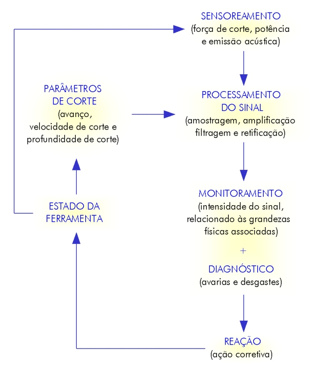

LMP>Research Guidelines>SIMAP>Cutting Tools Damage Diagnostic by Multisensors
INTRODUCTIONThe actual productivity tendency is associated to maximum production with lower adjoined cost, involving the minimal human participation. This requires highly trustworthy systems. Besides that, the hard machining new materials arising, and new and expensive cutting tool materials, require a complete turning process optimization. It is not more admissible that cutting tool substitution is made before the suitable moment, generating costs with cutting tool and stopped machine times. OBJECTIVESInside this context, it is proposed a monitorization system by multisensors, with the intention to recognize and diagnose cutting tool condition over its machining life with metals in a CNC turning machine, from an algorithm of the resulting signal in the system exit. RESEARCH DEVELOPMENTThe cutting tool condition is connected to a great parameters number, related to the machined material, cutting tool type, process conditions, etc. These parameters can be detected through sensors that, located in strategic machine spots, quantify indirectly the damages by the cutting forces signals, acoustic emission, and/or potency generated in turning process. The signals obtained by the different sensors are measured, treated (amplification, filtering, etc.), combined and analyzed (artificial intelligence algorithms), in order to emit information and instructions to CNC turning machine about cutting tool condition during production. The system monitoring efficiency in cutting tool diagnose will depend on collected information quality by the sensors, and algorithms used to analyze it, aiming the complete optimization and more convenient decision taking ahead detected damage type. Thus, multisensor system is capable to control cutting tool wearing in process, providing:
 Diagnose and control system of the cutting tool condition in machining process |
| Contact: SIMAP Walter Lindolfo Weingaertner Prof. Dr.-Ing |
Last update 21.07.2006 |